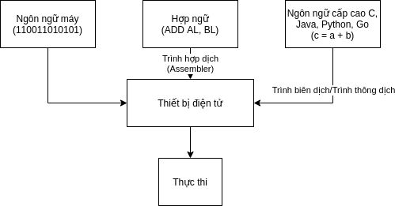

Máy tính và lập trình
Máy tính ban đầu được tạo ra để giúp con người giải các bài toán nhưng càng ngày nó càng làm được nhiều việc hơn là giải toán. Vậy nhờ gì mà máy tính có thể giải quyết hầu hết các vấn đề hiện tại trong cuộc sống? Nhờ lập trình.
Máy tính và các thiết bị điện tử lập trình được
Máy tính (computer) là một thiết bị có khả năng thực hiện hai việc và chỉ hai việc là tính toán và lưu trữ dữ liệu (thông tin). Nhưng nó làm rất tốt hai việc này. Ngày nay, máy tính có thể tính toán hàng triệu phép toán trong một giây và lưu trữ cả một thư viện sách khổng lồ trên một thẻ nhớ nhỏ xíu. Trước khi phát minh ra máy tính, thuật ngữ computer thường được dùng để chỉ một người chuyên làm nhiệm vụ tính toán.
Tuy vậy, máy tính không tự thực hiện tính toán được mà đều nhờ con người. Chính con người đã đưa ra các mệnh lệnh cho máy tính thực hiện. Đó là các chỉ thị lệnh dựa trên tập lệnh có sẵn trong bộ vi xử lý (CPU) của máy tính và việc tạo ra chuỗi các câu lệnh này chính là việc lập trình.
Hiện nay, chúng ta có thể đưa chương trình chúng ta viết vào thực thi không chỉ máy tính mà rất nhiều thiết bị điện tử khác như điện thoại, máy tính bảng, các thiết bị cầm tay hay ti vi, tủ lạnh, v.v… Đây đều là những thiết bị lập trình được.
Lập trình và ngôn ngữ lập trình
Như ở trên đã đề cập, lập trình là việc tạo ra một tập các chỉ thị lệnh để cho máy tính nói riêng và các thiết bị điện tử lập trình được nói chung thực thi nhằm giải quyết một vấn đề nào đó thông qua các bước tính toán. Người trực tiếp thực hiện việc lập trình gọi là lập trình viên (trước đây gọi là thảo chương viên).
Ngôn ngữ mà lập trình viên sử dụng để tạo ra các chỉ thị lệnh này gọi là ngôn ngữ lập trình. Mỗi chỉ thị lệnh là một chuỗi nhị phân gồm có 2 phần là mã phép toán và giá trị hoặc địa chỉ giá trị cần cho việc tính toán. Tập hợp các chỉ thị lệnh chúng ta viết để thực hiện một nhiệm vụ nào đó gọi là chương trình máy tính. Trước đây, lập trình viên phải tạo những chỉ thị lệnh này trên các bảng đục lỗ để máy tính thực thi bằng ngôn ngữ mà máy tính hiểu gọi là ngôn ngữ máy. Về sau, việc lập trình nhẹ nhàng hơn khi lập trình viên viết những câu lệnh gần với ngôn ngữ con người hơn. Bắt đầu từ hợp ngữ (Assembly) chỉ thay mã phép toán từ những con số nhị phân thành các tên gợi nhớ như ADD cho phép cộng hay SUB cho phép trừ. Dần dần các ngôn ngữ lập trình ra đời với những câu lệnh, cú pháp phức tạp tạo nên hàng trăm ngôn ngữ cấp cao như C/C++, Java hay Python, Go, v.v… Tùy theo mục đích của ngôn ngữ lập trình mà chúng được thiết kế để tạo điều kiện giải quyết những vấn đề mà ngôn ngữ đó hướng tới. Những đặc điểm này làm cho một ngôn ngữ có thể tiện lợi để dùng phát triển loại phần mềm này nhưng có thể khó để phát triển loại phần mềm khác.
Khi được viết bởi các ngôn ngữ lập trình không phải là ngôn ngữ máy, những câu lệnh này máy tính không thể hiểu được nên cần được dịch sang ngôn ngữ máy. Việc chuyển mã nguồn thành mã máy có thể diễn ra trước hoặc ngay khi máy tính thực thi. Nếu việc chuyển mã diễn ra trên toàn bộ mã nguồn trước rồi mới thực thi trên máy tính thì quá trình này gọi là biên dịch (compiler). Còn nếu việc chuyển mã diễn ra từng phần, chuyển đến đâu thực thi đến đó thì quá trình này gọi là thông dịch (interpreter).

Dựa trên các đặc điểm khác nhau, người ta chia ngôn ngữ lập trình thành các nhóm. Ví dụ:
- Dựa trên độ phức tạp ngôn ngữ: Ngôn ngữ lập trình cấp thấp (hợp ngữ), ngôn ngữ lập trình cấp cao (C, Java, v.v…).
- Dựa trên đặc điểm thực thi: Ngôn ngữ dòng lệnh (shell script), ngôn ngữ biên dịch (Pascal, C, Go, v.v… ), ngôn ngữ thông dịch (PHP, Python, Javascript, v.v…). Java hay C# thì vừa có quá trình biên dịch ra bytecode, vừa có quá trình thông dịch.
- Dựa trên mức độ phục vụ: ngôn ngữ lập trình đa năng (general purpose language) như C/C++, Java, Go, Python, v.v… và ngôn ngữ lập trình chuyên biệt (domain specific language) như Javascript, R, Julia, v.v…
- Dựa trên mô hình ngôn ngữ: ngôn ngữ mệnh lệnh (imperative language), ngôn ngữ khai báo (declarative language), ngôn ngữ thủ tục (procedural language), ngôn ngữ chức năng (functional language), ngôn ngữ hướng đối tượng (object oriented language), ngôn ngữ hướng sự kiện (event driven language), v.v…
Máy tính không thông minh như chúng ta tưởng, chúng chỉ có thể làm những gì chúng ta yêu cầu. Chương trình chúng ta viết tốt, chi tiết và đầy đủ thì máy tính sẽ xử lý được nhiều tình huống khác nhau nên trông chúng có vẻ thông minh. Ngược lại, những tình huống chúng ta không nghĩ đến và thiếu mô tả cách giải quyết qua những câu lệnh thì khi trúng tình huống đó, máy tính sẽ không xử lý được gì và đứng ì ra. Thậm chí đôi khi do nhầm lẫn (mà chuyện này thường xuyên) chúng ta tạo ra các câu lệnh sai hoặc thiếu chuẩn xác trong một số tình huống, nếu rơi vào, máy tính sẽ bị lỗi và không thực thi tiếp được. Do đó lập trình viên phải lập trình cho mọi tình huống nhìn thấy được và đưa các tình huống có thể xảy ra nhưng chưa xác định rõ vào nhánh ngoại lệ để xử lý sau tránh việc bị lỗi như đề cập ở trên. Để có thể làm tốt việc này, lập trình viên thường cần sự trợ giúp của các bạn phân tích nghiệp vụ (Business Analyst - BA) phân tích các tình huống trước khi bắt tay lập trình và các bạn kiểm tra phát hiện những lỗi xảy ra khi thực thi (Kiểm thử viên - Tester).
Lập trình là một công việc thú vị. Để xây dựng nên những phần mềm hữu ích, lập trình viên cần có cái nhìn bao quát để hiểu rõ nghiệp vụ của lĩnh vực mà phần mềm phục vụ nhưng cũng cần góc nhìn chi tiết, tính tỉ mỉ để đảm bảo phần mềm giải quyết chuẩn xác các yêu cầu nghiệp vụ này. Lập trình viên như một huấn luyện viên, bằng phần mềm của mình, có thể huấn luyện một thiết bị điện tử vô tri vô giác thành một thiết bị thông minh giúp ích cho cuộc sống.
Tóm tắt
- Máy tính xuất phát điểm là thiết bị tính toán. Ngày nay máy tính trở thành thiết bị thiết yếu trong mọi lĩnh vực.
- Máy tính chỉ có thể hoạt động được là nhờ các chương trình máy tính được tạo ra bởi các lập trình viên.
- Việc lập trình tạo ra các chương trình máy tính dựa trên các ngôn ngữ lập trình gồm ngôn ngữ máy, hợp ngữ và ngôn ngữ cấp cao.
- Các chỉ thị lệnh viết bằng hợp ngữ hay ngôn ngữ cấp cao phải được dịch thành ngôn ngữ máy để máy tính có thể hiểu và thực thi. Dịch toàn bộ trước khi thực thi là quá trình biên dịch do trình biên dịch đảm nhiệm. Dịch từng phần và thực thi phần vừa dịch là quá trình thông dịch bởi các trình thông dịch.
- Có nhiều cách gom nhóm ngôn ngữ lập trình dựa trên các đặc điểm khác nhau và một ngôn ngữ có thể thuộc 1 hay nhiều nhóm.
- Lập trình là công việc đòi hỏi tính bao quát nhưng cũng cần tính chi tiết và cả khả năng trừu tượng. Tỉ mỉ, cẩn thận cũng là một tính cách cần có của lập trình viên.